🔑 关键词
软件技能化 能力检索 Agent架构 生命周期管理 CAP协议
术语说明
在深入探讨之前，我们需要明确本文中使用的核心术语，以避免"能力"与"技能"等概念混淆。
核心术语对照表
| 中文术语 | 英文术语 | 缩写 | 定义 | 示例 |
|---|---|---|---|---|
| 技能 | Skill | - | 一个独立的功能单元包，包含一组相关的能力、元数据和配置。技能是ooderAgent中的部署和分发单位。 | hr-assistant（HR助手技能） |
| 能力 | Capability | Cap | 技能内部的一个原子化功能点，可被独立调用。能力通过CAP协议寻址。 | queryEmployeeInfo（查询员工信息） |
| 能力提供者 | Provider | - | 提供底层服务支持的组件，如LLM服务、数据库服务等。 | OpenAIProvider |
| CAP地址 | Capability Address | CAP | 能力的统一寻址标识，格式为 cap://skillId/capabilityName |
cap://hr-assistant/queryEmployeeInfo |
| 激活 | Activation | - | 将技能从"已安装"状态转换为"已激活"状态的过程 | 激活HR助手技能 |
| 场景 | Scene | - | 一组技能的集合，代表一个业务场景或应用环境 | 企业办公场景 |
关键区分：技能 vs 能力
| 维度 | 技能 (Skill) | 能力 (Capability) |
|---|---|---|
| 粒度 | 粗粒度，功能包 | 细粒度，原子功能 |
| 部署单位 | 是 | 否 |
| 寻址方式 | 通过技能ID | 通过CAP地址 |
| 生命周期 | 独立管理 | 隶属于技能 |
| 可组合性 | 包含多个能力 | 不可再分 |
💡 类比理解
技能 ≈ 手机App（如微信）
能力 ≈ App内的功能（如发送消息、朋友圈、支付）
引言：软件技能化的时代浪潮
0.1 从SaaS到技能化：软件形态的演进
软件行业正在经历一场深刻的变革。从本地部署到云计算，从单体应用到微服务，从SaaS（Software as a Service）到如今的软件技能化，每一次演进都在重新定义软件的价值边界。
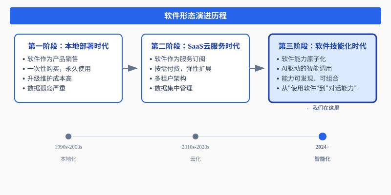
图1：软件形态演进历程
什么是软件技能化？
软件技能化是指将传统软件的功能拆解为独立的、可被AI理解和调用的"技能"或"能力"单元。用户不再需要学习复杂的软件界面，而是通过自然语言直接与软件能力交互。
| 维度 | 传统SaaS | 软件技能化 |
|---|---|---|
| 交互方式 | 图形界面操作 | 自然语言对话 |
| 能力边界 | 功能模块固化 | 能力原子化、可组合 |
| 学习成本 | 需要培训和学习 | 零学习成本 |
| 调用方式 | 人工点击操作 | AI智能调度 |
| 扩展性 | 版本迭代周期长 | 即插即用 |
0.2 行业探索：用友本体论、钉钉悟空与小龙虾
在软件技能化的探索道路上，国内多家企业已经开始了积极的尝试。
用友本体论：企业软件的语义重构
用友提出的本体论（Ontology）理念，试图构建企业软件的统一语义模型：
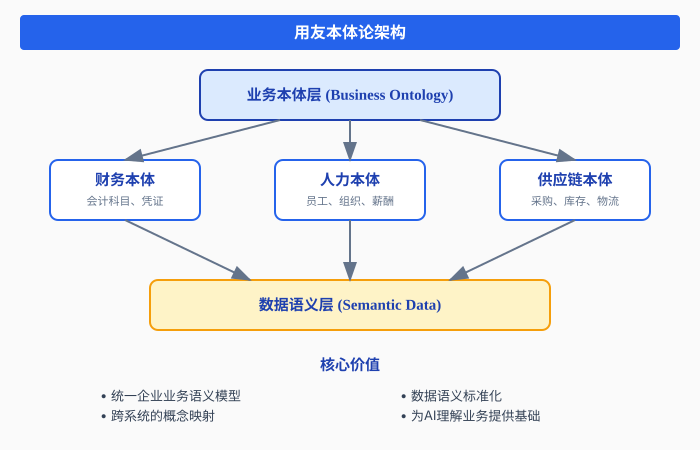
图2：用友本体论架构
用友本体论的价值：
- 解决企业软件间的语义鸿沟
- 为AI理解企业业务提供基础
- 支撑智能化的业务流程编排
面临的挑战：
- 本体构建成本高昂
- 跨行业通用性不足
- 动态业务场景适应性差
钉钉悟空：智能办公的能力聚合
钉钉推出的悟空平台，尝试将办公场景下的各类能力进行聚合：
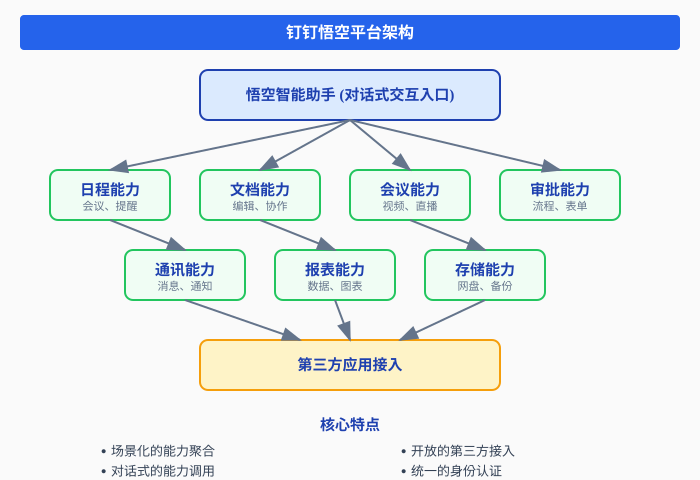
图3：钉钉悟空平台架构
钉钉悟空的创新：
- 将办公场景能力化
- 支持自然语言调用
- 构建开放的能力生态
存在的局限：
- 能力粒度较粗
- 缺乏统一的能力寻址机制
- 生命周期管理不完善
小龙虾：软件能力检索的新探索
小龙虾项目代表了另一种思路——软件能力检索：
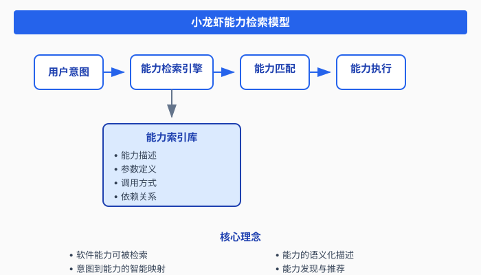
图4：小龙虾能力检索模型
小龙虾的贡献：
- 提出了能力检索的概念
- 建立了能力语义描述框架
- 探索了意图-能力映射机制
待解决的问题：
- 能力的动态发现机制
- 能力的生命周期管理
- 分布式能力的协调
0.3 软件能力检索：核心论点
综合以上探索，我们可以提炼出软件能力检索的核心论点：
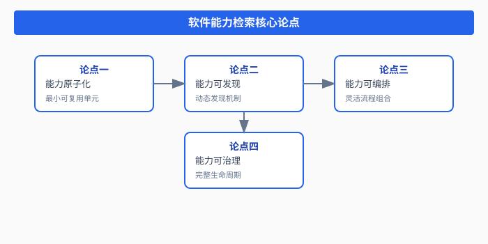
图5：软件能力检索核心论点
0.4 传统软件技能化的困境
尽管行业探索丰富，但传统软件技能化仍面临诸多困境：
困境一：能力边界模糊
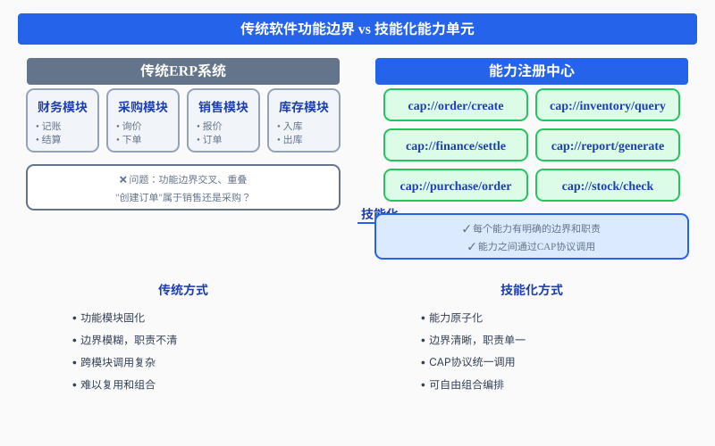
图6：传统软件功能边界 vs 技能化能力单元
困境二：能力发现机制缺失
传统软件的能力调用方式：
// 传统方式：硬编码调用
public class OrderService {
@Autowired
private InventoryService inventoryService; // 编译时绑定
@Autowired
private FinanceService financeService; // 编译时绑定
public void createOrder(Order order) {
// 直接调用，无法动态发现
inventoryService.checkStock(order.getItems());
financeService.calculatePrice(order);
}
}问题：
- 能力调用在编译时确定，无法动态发现
- 新增能力需要修改代码
- 无法实现运行时的能力替换
困境三：生命周期管理混乱
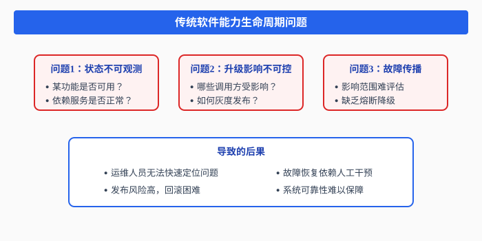
图7：传统软件能力生命周期问题
困境四：多Agent协作困难
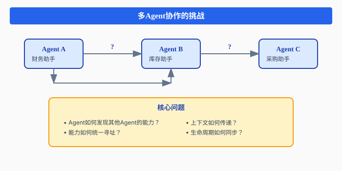
图8：多Agent协作的挑战
0.5 ooderAgent的解决方案
面对这些挑战，ooderAgent提出了一套完整的解决方案：
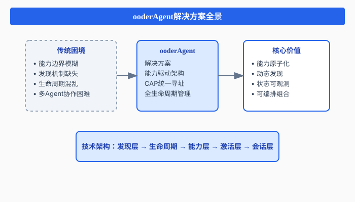
图9：ooderAgent解决方案全景
ooderAgent如何解决传统困境：
| 困境 | ooderAgent解决方案 |
|---|---|
| 能力边界模糊 | CAP协议统一寻址，能力原子化定义 |
| 能力发现缺失 | DiscoveryProvider动态发现，元数据驱动注册 |
| 生命周期混乱 | 9状态模型，事务性状态转换，事件订阅机制 |
| 多Agent协作困难 | CAP跨Skill调用，A2A上下文传递，会话隔离 |
第一部分：为什么需要复杂的能力底座
1.1 传统Agent开发的困境
在构建AI Agent应用时，开发者往往面临一系列架构层面的挑战。这些挑战不是简单的技术问题，而是随着应用规模扩大而逐渐暴露的根本性架构缺陷。
困境一：硬编码能力的局限性
// 传统方式：能力硬编码在代码中
public class TraditionalAgent {
private OpenAIClient llmClient;
private WeatherService weatherService;
private EmailService emailService;
public Response handleRequest(String query) {
if (query.contains("天气")) {
return weatherService.getWeather();
} else if (query.contains("邮件")) {
return emailService.sendEmail();
}
// 每增加一个能力，都需要修改代码
}
}问题分析：
- 新增能力需要修改核心代码，违反开闭原则
- 能力之间耦合度高，难以独立测试和维护
- 无法在运行时动态扩展能力
- 能力版本管理困难
困境二：单体架构的扩展瓶颈
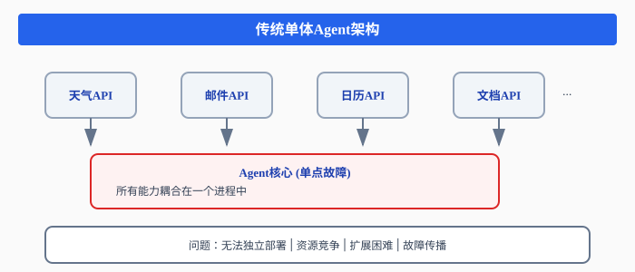
图10：传统单体Agent架构
问题分析：
- 所有能力耦合在一个进程中，无法独立部署
- 资源竞争：一个能力的高负载影响其他能力
- 扩展困难：无法针对特定能力进行水平扩展
- 故障传播：一个能力的错误可能导致整个Agent崩溃
困境三：多Agent协作的复杂性
当业务需要多个Agent协作时，问题更加突出：
Agent A ←──→ Agent B ←──→ Agent C
↑ ↑ ↑
│ │ │
└───────────┴───────────┘
如何协调？
如何传递上下文？
如何管理生命周期？核心问题：
- 发现机制缺失：Agent如何发现其他Agent的能力？
- 生命周期不同步：一个Agent重启，另一个Agent如何感知？
- 上下文传递混乱：对话历史、用户偏好如何传递？
- 能力寻址困难：如何统一标识和调用远程能力？
1.2 能力驱动架构的必然性
面对这些挑战，我们需要重新思考Agent的架构设计。能力驱动架构（Capability-Driven Architecture）应运而生。
核心思维转变
| 维度 | 传统思维 | 能力驱动思维 |
|---|---|---|
| 构建单元 | 功能（Function） | 能力（Capability） |
| 发现方式 | 硬编码引用 | 动态发现与注册 |
| 生命周期 | 应用级管理 | 能力级独立管理 |
| 寻址方式 | 内存引用 | CAP协议统一寻址 |
| 扩展方式 | 修改代码 | 插件化安装 |
什么是"能力"？
在ooderAgent中，能力（Capability）是一个核心概念：
public interface Capability {
String getId(); // 能力唯一标识
String getName(); // 能力名称
CapabilityType getType(); // 能力类型
String getDescription(); // 能力描述
enum CapabilityType {
INTERNAL, // 内部能力：仅供Skill内部使用
EXPOSED, // 对外暴露：可被其他Skill调用
ENTRY // 入口能力：作为用户交互入口
}
}能力 vs 功能的区别：
| 功能（Function） | 能力（Capability） |
|---|---|
| 代码级别的函数 | 服务级别的单元 |
| 编译时确定 | 运行时发现 |
| 静态引用 | 动态寻址 |
| 无独立生命周期 | 独立生命周期管理 |
1.3 为什么需要全生命周期管理
每个能力都有其独立的生命周期，就像一个微服务一样。全生命周期管理解决了以下核心问题：
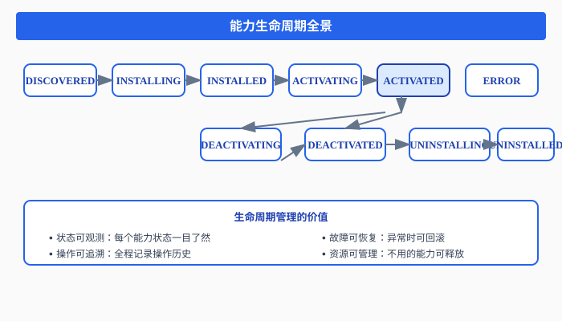
图11：能力生命周期全景
生命周期管理的价值：
- 状态可观测：每个能力处于什么状态，一目了然
- 操作可追溯：谁在什么时候做了什么操作，全程记录
- 故障可恢复：状态异常时，可以回滚到稳定状态
- 资源可管理：不用的能力可以停用或卸载，释放资源
1.4 CAP协议：统一能力寻址的意义
在分布式系统中，寻址是核心问题之一。ooderAgent引入CAP协议（Capability Address Protocol）来解决能力寻址问题。
CAP地址格式
cap://skillId/capabilityName
示例：
cap://weather-service/getCurrentWeather
cap://email-service/sendEmail
cap://hr-assistant/queryEmployeeInfoCAP协议的设计原则
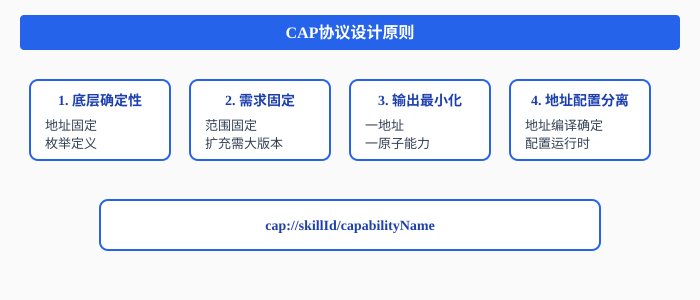
图12：CAP协议设计原则
CAP地址空间规划
| 分类代码 | 分类名称 | 地址范围 | 说明 |
|---|---|---|---|
| SYS | 系统核心 | 0x00-0x07 | 系统核心服务 |
| ORG | 组织服务 | 0x08-0x0F | 组织架构、用户管理 |
| AUTH | 认证服务 | 0x10-0x17 | 认证、授权 |
| LLM | 大语言模型 | 0x28-0x2F | LLM、Embedding |
| KNOW | 知识库 | 0x30-0x37 | 知识库、向量存储 |
1.5 ooderAgent的设计哲学
声明式 vs 命令式
命令式（传统方式）：
// 告诉系统"怎么做"
WeatherService weather = new WeatherService();
weather.setApiKey("xxx");
weather.setEndpoint("https://api.weather.com");
weather.initialize();
String result = weather.getWeather("Beijing");声明式（ooderAgent方式）：
# 告诉系统"要什么"
skill:
id: weather-service
capabilities:
- name: getCurrentWeather
type: EXPOSED
address: cap://weather-service/getCurrentWeather
dependencies:
- cap://http-client/default系统自动完成：
- 依赖解析
- 服务发现
- 能力注入
- 生命周期管理
元数据驱动的能力发现
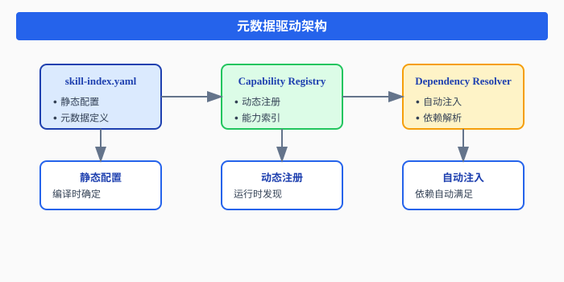
图13：元数据驱动架构
插件化架构的核心价值
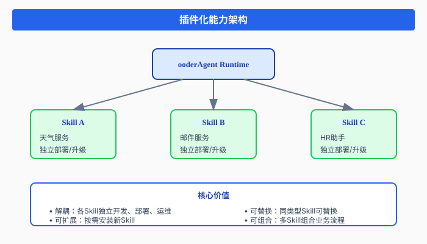
图14：插件化能力架构
核心价值：
- 解耦：各Skill独立开发、部署、运维
- 可扩展：按需安装新的Skill，无需修改核心
- 可替换：同类型Skill可以替换，不影响上层应用
- 可组合：多个Skill可以组合成复杂业务流程
第二部分：核心能力底座详解
2.1 Skill生命周期管理
应用实例：智能客服Skill的完整生命周期
让我们通过一个智能客服Skill的实例，深入理解生命周期管理。
# skill-index.yaml
skill:
id: customer-service-bot
name: 智能客服助手
version: 1.0.0
skillForm: SCENE
capabilities:
- name: answerQuestion
type: ENTRY
description: 回答用户问题
- name: transferToHuman
type: EXPOSED
description: 转人工客服
- name: queryOrderStatus
type: INTERNAL
description: 查询订单状态
dependencies:
- skillId: llm-service
capability: chat
- skillId: order-service
capability: query九状态模型详解
public enum SkillLifecycleState {
DISCOVERED("已发现"), // Skill已被发现，但未安装
INSTALLING("安装中"), // 正在安装
INSTALLED("已安装"), // 安装完成，可激活
ACTIVATING("激活中"), // 正在激活
ACTIVATED("已激活"), // 已激活，可接受调用
DEACTIVATING("停用中"), // 正在停用
DEACTIVATED("已停用"), // 已停用，可重新激活
UNINSTALLING("卸载中"), // 正在卸载
UNINSTALLED("已卸载"), // 已卸载
ERROR("错误"); // 运行出错
}状态转换图：
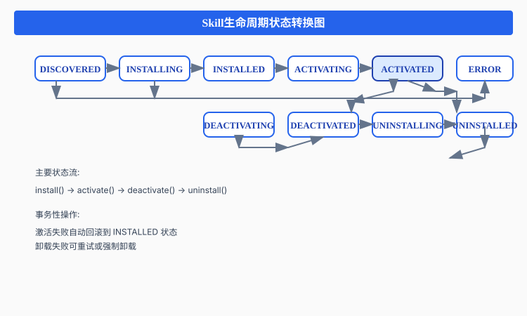
图15：Skill生命周期状态转换图
事务性状态转换
public interface SceneSkillLifecycle {
/**
* 安装场景技能 - 事务性操作
*/
CompletableFuture<LifecycleInstallResult> installSceneSkill(
String sceneId,
String skillId,
Map<String, Object> config
);
/**
* 激活场景技能
*/
CompletableFuture<ActivateResult> activateSceneSkill(
String sceneId,
String skillId,
String role
);
/**
* 停用场景技能
*/
CompletableFuture<DeactivateResult> deactivateSceneSkill(
String sceneId,
String skillId
);
/**
* 卸载场景技能
*/
CompletableFuture<UninstallResult> uninstallSceneSkill(
String sceneId,
String skillId
);
}事务保证：
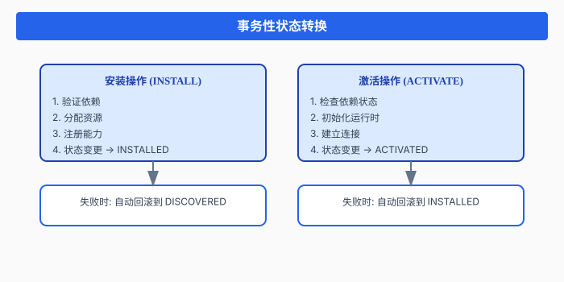
图16：事务性状态转换
2.2 能力系统与CAP协议
应用实例：HR助手的多能力组合
# hr-assistant skill-index.yaml
skill:
id: hr-assistant
name: HR智能助手
version: 2.0.0
capabilities:
# 入口能力 - 用户交互入口
- name: chat
type: ENTRY
address: cap://hr-assistant/chat
description: HR对话入口
# 对外暴露 - 可被其他Skill调用
- name: queryEmployeeInfo
type: EXPOSED
address: cap://hr-assistant/queryEmployeeInfo
description: 查询员工信息
- name: submitLeaveRequest
type: EXPOSED
address: cap://hr-assistant/submitLeaveRequest
description: 提交请假申请
# 内部能力 - 仅供内部使用
- name: validateLeaveBalance
type: INTERNAL
description: 验证假期余额
- name: notifyManager
type: INTERNAL
description: 通知经理审批三种能力类型详解
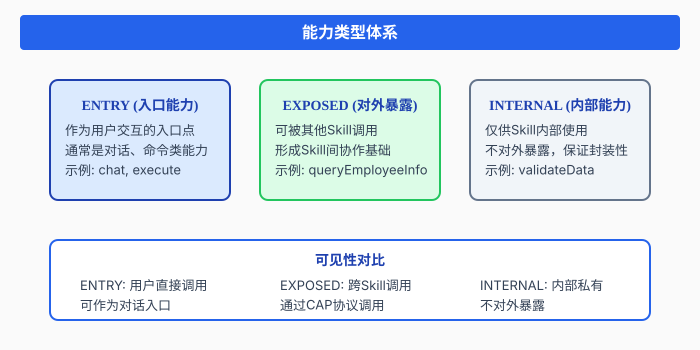
图17：能力类型体系
CAP协议跨Skill调用
// Skill A 调用 Skill B 的能力
public class HrAssistantSkill {
@InjectCapability("cap://email-service/sendEmail")
private Capability emailCapability;
public void notifyEmployee(String employeeId, String message) {
// 通过CAP协议调用邮件服务
CapabilityRequest request = CapabilityRequest.builder()
.address("cap://email-service/sendEmail")
.param("to", employeeId + "@company.com")
.param("subject", "HR通知")
.param("body", message)
.build();
CapabilityResponse response = emailCapability.execute(request);
if (!response.isSuccess()) {
// 降级处理：使用内部通知能力
internalNotify(employeeId, message);
}
}
}2.3 激活流引擎
应用实例：复杂业务场景的依赖注入
考虑一个智能工作流Skill，它依赖多个服务：
skill:
id: smart-workflow
name: 智能工作流
dependencies:
- skillId: llm-service
capability: chat
required: true
- skillId: database-service
capability: query
required: true
- skillId: email-service
capability: sendEmail
required: false # 可选依赖
- skillId: calendar-service
capability: schedule
required: false四阶段激活流程
public enum ActivationPhase {
INITIALIZING("初始化"), // 阶段1：初始化
INSTALLING("安装中"), // 阶段2：安装依赖
CONFIGURING("配置中"), // 阶段3：配置绑定
ACTIVATING("激活中"), // 阶段4：激活运行
COMPLETED("已完成"), // 成功完成
FAILED("失败"); // 激活失败
}激活流程详解：
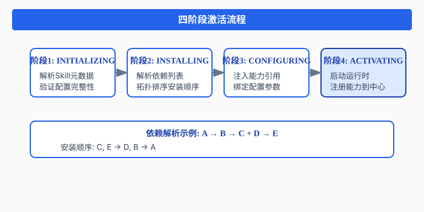
图18：四阶段激活流程
依赖解析算法
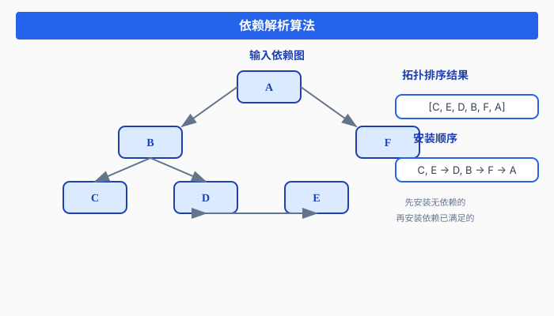
图19：依赖解析算法
输入依赖图:
A → B → C
│ ↘
│ D → E
↓
F
拓扑排序结果:
[C, E, D, B, F, A] 或 [E, C, D, B, F, A] 等
安装顺序（逆拓扑）:
先安装无依赖的: C, E
再安装依赖已满足的: D, B, F
最后安装: ALLM Agent的上下文构建
激活时，系统会自动构建Agent所需的上下文：
public class SkillActivationContext {
private RoleContext roleContext; // 角色定义
private KnowledgeContext knowledgeContext; // 知识库
private FunctionContext functionContext; // Function Calling
private MemoryContext memoryContext; // 会话记忆
/**
* 激活时构建完整上下文
*/
public void activate(SkillMetadata metadata) {
// 1. 构建角色上下文
this.roleContext = RoleContext.builder()
.name(metadata.getRoleName())
.description(metadata.getRoleDescription())
.build();
// 2. 加载知识库（多级加载）
this.knowledgeContext = KnowledgeContext.builder()
.loadLevel(KnowledgeLoadLevel.ADVANCED)
.sources(metadata.getKnowledgeSources())
.build();
// 3. 注册Function Calling
this.functionContext = FunctionContext.builder()
.loadFromSkill(metadata)
.build();
// 4. 初始化记忆上下文
this.memoryContext = new MemoryContext();
}
}2.4 Provider与发现机制
应用实例：多模型Provider的热插拔
# llm-provider skill-index.yaml
skill:
id: llm-provider
name: LLM服务提供者
skillForm: PROVIDER
capabilities:
- name: chat
type: EXPOSED
address: cap://llm/default
- name: embedding
type: EXPOSED
address: cap://embedding/default
implementations:
- provider: OpenAI
priority: 100
config:
model: gpt-4
- provider: Claude
priority: 90
config:
model: claude-3
- provider: LocalLLM
priority: 50
config:
endpoint: http://localhost:8080Provider生命周期
public interface BaseProvider {
String getProviderName(); // 提供者名称
String getVersion(); // 版本号
void initialize(SceneEngine engine); // 初始化
void start(); // 启动
void stop(); // 停止
boolean isInitialized(); // 是否已初始化
boolean isRunning(); // 是否运行中
default int getPriority() { return 100; } // 优先级
}Provider生命周期流程：
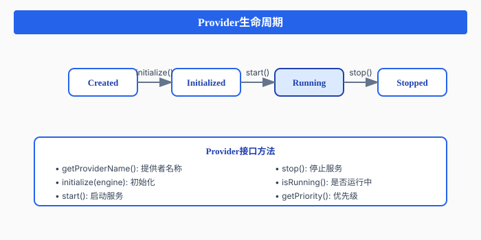
图19：Provider生命周期
动态服务发现
public interface DiscoveryProvider {
String getProviderName();
void initialize(DiscoveryConfig config);
void start();
void stop();
boolean isRunning();
// 执行发现查询
CompletableFuture<List<DiscoveredItem>> discover(DiscoveryQuery query);
int getPriority();
boolean isApplicable(DiscoveryScope scope);
}发现范围（DiscoveryScope）：
| Scope | 说明 | 发现方式 |
|---|---|---|
| LOCAL | 本地进程内 | 直接内存查找 |
| CLUSTER | 集群内 | UDP广播/mDNS |
| REMOTE | 远程服务 | SkillCenter API |
| HYBRID | 混合模式 | 多种方式组合 |
第三部分：能力管理功能介绍
3.1 能力注册中心
能力注册中心是ooderAgent的核心组件，负责管理所有能力的元数据和生命周期。
功能概览
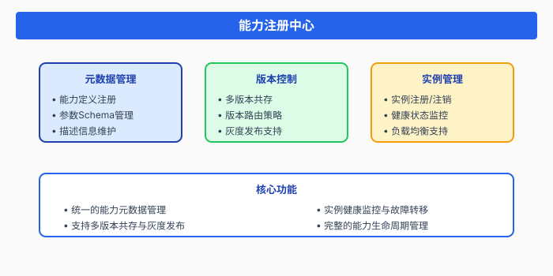
图20：能力注册中心
【界面截图预留位置：能力注册中心主界面】
能力注册中心主界面截图
此处预留实际产品界面截图位置
3.2 能力监控与运维
健康检查机制
public interface HealthProvider extends BaseProvider {
/**
* 健康检查结果
*/
class HealthStatus {
private String capabilityId;
private HealthState state; // HEALTHY, DEGRADED, UNHEALTHY
private long lastCheckTime;
private String message;
private Map<String, Object> details;
}
/**
* 执行健康检查
*/
HealthStatus checkHealth(String capabilityId);
/**
* 批量健康检查
*/
Map<String, HealthStatus> checkAllHealth();
}性能指标采集
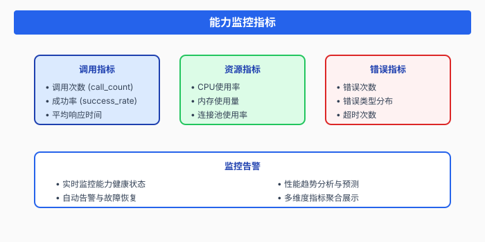
图21：能力监控指标
【界面截图预留位置：能力监控仪表盘】
能力监控仪表盘截图
此处预留实际产品界面截图位置
告警与自动恢复
# 告警规则配置
alerting:
rules:
- name: 高错误率告警
condition: success_rate < 95%
duration: 5m
severity: warning
actions:
- notify: ops-team
- auto_restart: true
- name: 响应超时告警
condition: p99_latency_ms > 5000
duration: 3m
severity: critical
actions:
- notify: ops-team
- scale_out: 2 # 自动扩容2个实例
- name: 能力不可用告警
condition: health_status == UNHEALTHY
duration: 1m
severity: critical
actions:
- notify: all
- failover: true # 自动故障转移3.3 能力编排
能力编排允许将多个能力组合成复杂的业务流程。
可视化流程设计
能力编排设计器界面截图
此处预留实际产品界面截图位置
能力组合策略
# 编排配置示例
orchestration:
id: smart-assistant-workflow
name: 智能助手工作流
steps:
- id: intent-recognition
capability: cap://llm-service/classifyIntent
input:
query: ${userInput}
output:
intent: ${result.intent}
- id: route-by-intent
type: switch
condition: ${intent-recognition.intent}
cases:
weather:
next: weather-query
email:
next: email-compose
default:
next: general-chat
- id: weather-query
capability: cap://weather-service/getWeather
input:
location: ${userInput.location}
output:
weather: ${result}
- id: format-response
capability: cap://llm-service/formatResponse
input:
context: ${weather-query}
template: weather_report第四部分：LLM Agent设计模式
4.1 基于能力底座的Agent架构
ooderAgent为LLM Agent提供了完整的上下文管理体系，让Agent能够专注于业务逻辑。
四大上下文组件
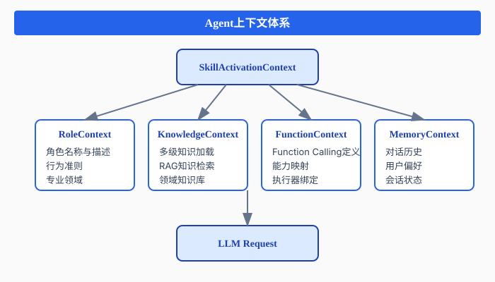
图22：Agent上下文体系
RoleContext：角色定义
public class RoleContext {
private String name; // 角色名称
private String description; // 角色描述
private List<String> expertise; // 专业领域
private String tone; // 交互风格
private List<String> guidelines; // 行为准则
/**
* 构建系统提示语
*/
public String buildPromptSection() {
StringBuilder sb = new StringBuilder();
sb.append("你是一个").append(name).append("。\n");
sb.append(description).append("\n\n");
if (expertise != null && !expertise.isEmpty()) {
sb.append("你的专业领域包括：\n");
expertise.forEach(e -> sb.append("- ").append(e).append("\n"));
}
if (guidelines != null && !guidelines.isEmpty()) {
sb.append("\n行为准则：\n");
guidelines.forEach(g -> sb.append("- ").append(g).append("\n"));
}
return sb.toString();
}
}示例：HR助手角色定义
RoleContext hrRole = RoleContext.builder()
.name("HR智能助手")
.description("你是一个专业的HR助手，帮助员工处理人力资源相关事务")
.expertise(Arrays.asList(
"员工信息查询",
"请假流程办理",
"薪资福利咨询",
"培训发展指导"
))
.tone("专业、友好、高效")
.guidelines(Arrays.asList(
"保护员工隐私，不泄露敏感信息",
"遇到复杂问题时，建议联系人工HR",
"使用简洁明了的语言回答问题"
))
.build();KnowledgeContext：多级知识加载
public class KnowledgeContext {
public enum KnowledgeLoadLevel {
BASIC, // 基础：核心概念和常用FAQ
ADVANCED, // 进阶：详细文档和案例
EXPERT, // 专家：完整知识库
FULL // 全量：包含历史数据
}
private KnowledgeLoadLevel loadLevel;
private List<KnowledgeSource> sources;
private List<KnowledgeChunk> loadedChunks;
/**
* 根据级别加载知识
*/
public void loadKnowledge() {
for (KnowledgeSource source : sources) {
List<KnowledgeChunk> chunks = source.load(loadLevel);
loadedChunks.addAll(chunks);
}
}
/**
* RAG检索
*/
public List<KnowledgeChunk> retrieve(String query, int topK) {
// 向量检索相关知识点
return vectorSearch(query, loadedChunks, topK);
}
}多级加载策略：
| 级别 | 加载内容 | 适用场景 | Token消耗 |
|---|---|---|---|
| BASIC | 核心概念、FAQ | 快速响应 | ~500 |
| ADVANCED | 详细文档、案例 | 深度咨询 | ~2000 |
| EXPERT | 完整知识库 | 专业问题 | ~5000 |
| FULL | 全量数据+历史 | 复杂分析 | ~10000+ |
FunctionContext：动态Function Calling
public class FunctionContext {
private Map<String, FunctionDefinition> functions;
private Map<String, FunctionExecutor> executors;
/**
* 从Skill元数据加载Function定义
*/
public void loadFromSkill(SkillMetadata metadata) {
for (Capability cap : metadata.getCapabilities()) {
if (cap.getType() == CapabilityType.EXPOSED
|| cap.getType() == CapabilityType.ENTRY) {
FunctionDefinition func = FunctionDefinition.builder()
.name(cap.getName())
.description(cap.getDescription())
.parameters(cap.getInputParameters())
.build();
functions.put(func.getName(), func);
// 绑定执行器到CAP地址
executors.put(func.getName(),
(params) -> executeCapability(cap.getAddress(), params));
}
}
}
/**
* 转换为LLM Tools格式
*/
public List<Tool> toTools() {
return functions.values().stream()
.map(this::convertToTool)
.collect(Collectors.toList());
}
/**
* 执行Function Call
*/
public Object execute(String functionName, Map<String, Object> params) {
FunctionExecutor executor = executors.get(functionName);
if (executor == null) {
throw new IllegalArgumentException("Unknown function: " + functionName);
}
return executor.execute(params);
}
}MemoryContext：会话记忆管理
public class MemoryContext {
private List<Message> history; // 对话历史
private Map<String, Object> userPreferences; // 用户偏好
private Map<String, Object> sessionState; // 会话状态
/**
* 添加消息到历史
*/
public void addMessage(MessageRole role, String content) {
history.add(new Message(role, content, System.currentTimeMillis()));
// 自动管理历史长度
if (history.size() > MAX_HISTORY_LENGTH) {
// 保留系统消息和最近的对话
trimHistory();
}
}
/**
* 获取格式化的历史
*/
public List<Map<String, String>> getHistory() {
return history.stream()
.map(m -> Map.of(
"role", m.getRole().name().toLowerCase(),
"content", m.getContent()
))
.collect(Collectors.toList());
}
/**
* 添加Tool结果消息
*/
public void addToolResultMessage(String toolCallId, String result) {
history.add(new Message(
MessageRole.TOOL,
result,
Map.of("tool_call_id", toolCallId)
));
}
}4.2 Agent与能力的交互模式
能力发现与选择
public class AgentCapabilitySelector {
/**
* 根据用户意图选择合适的能力
*/
public Capability selectCapability(String userIntent, String query) {
// 1. 查询能力注册中心
List<Capability> candidates = capabilityRegistry.findByIntent(userIntent);
// 2. 根据优先级和健康状态排序
candidates.sort((a, b) -> {
int healthCompare = Boolean.compare(
isHealthy(a), isHealthy(b)
);
if (healthCompare != 0) return -healthCompare;
return Integer.compare(b.getPriority(), a.getPriority());
});
// 3. 返回最优能力
return candidates.isEmpty() ? null : candidates.get(0);
}
}上下文注入策略
public class ContextInjectionStrategy {
/**
* 构建完整的LLM请求上下文
*/
public ChatRequest buildRequest(SkillActivationContext context, String userQuery) {
ChatRequest request = new ChatRequest();
// 1. 注入角色上下文
request.setSystemPrompt(context.getRoleContext().buildPromptSection());
// 2. 注入知识上下文
List<KnowledgeChunk> relevantKnowledge = context.getKnowledgeContext()
.retrieve(userQuery, 5);
request.appendSystemPrompt(buildKnowledgePrompt(relevantKnowledge));
// 3. 注入Function Calling
request.setTools(context.getFunctionContext().toTools());
// 4. 注入记忆上下文
request.setMessages(context.getMemoryContext().getHistory());
// 5. 添加当前用户输入
request.addMessage(MessageRole.USER, userQuery);
return request;
}
}结果处理与反馈
public class AgentResponseHandler {
/**
* 处理LLM响应
*/
public void handleResponse(ChatResponse response, SkillActivationContext context) {
// 1. 检查是否有Function Call
if (response.hasToolCalls()) {
for (ToolCall toolCall : response.getToolCalls()) {
// 2. 执行能力调用
Object result = context.getFunctionContext()
.execute(toolCall.getName(), toolCall.getArguments());
// 3. 记录到记忆上下文
context.getMemoryContext()
.addToolResultMessage(toolCall.getId(), result.toString());
}
// 4. 继续对话
continueConversation(context);
} else {
// 5. 直接返回文本响应
context.getMemoryContext()
.addMessage(MessageRole.ASSISTANT, response.getContent());
sendToUser(response.getContent());
}
}
}第五部分：ooderAgent MVP实践
5.1 MVP版本架构概览
核心功能模块
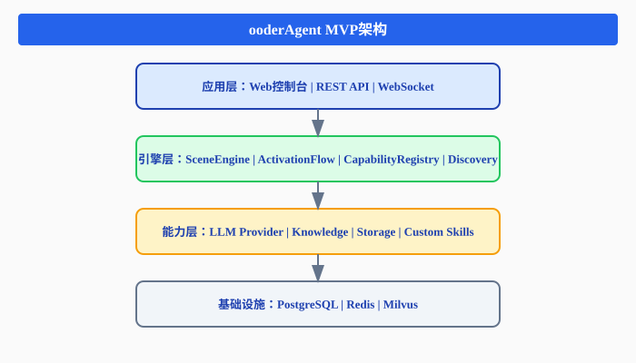
图23：ooderAgent MVP架构
技术栈选型
| 层次 | 技术选型 | 说明 |
|---|---|---|
| 应用层 | Spring Boot + Vue.js | 前后端分离架构 |
| 引擎层 | Java 17+ | 核心引擎实现 |
| 能力层 | SPI插件机制 | 可扩展能力体系 |
| 数据层 | PostgreSQL + Redis + Milvus | 持久化与缓存 |
| 通信层 | REST + WebSocket | API与实时通信 |
【架构图预留位置】
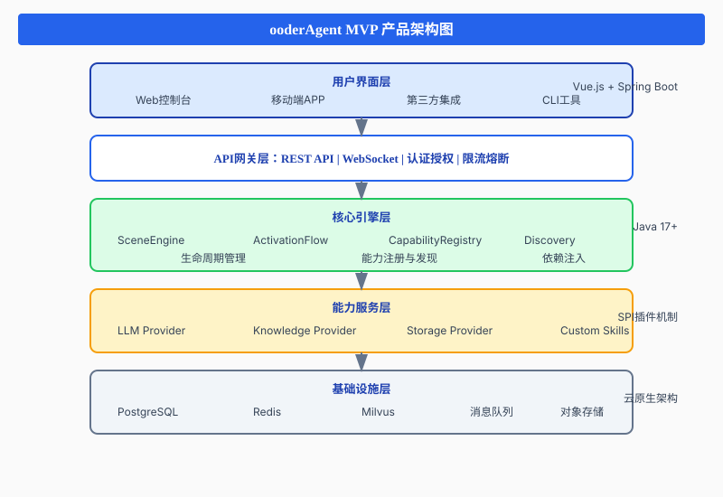
图23：ooderAgent MVP产品架构图
5.2 使用协议搭建应用
Step 1：定义Skill元数据
# skill-index.yaml
skill:
id: smart-assistant
name: 智能助手
version: 1.0.0
skillForm: SCENE
spec:
description: 企业级智能助手，支持多场景对话
author: Ooder Team
tags:
- assistant
- enterprise
- ai
capabilities:
- name: chat
type: ENTRY
address: cap://smart-assistant/chat
description: 智能对话入口
inputParameters:
- name: query
type: string
required: true
description: 用户问题
- name: context
type: object
required: false
description: 额外上下文
- name: searchKnowledge
type: EXPOSED
address: cap://smart-assistant/searchKnowledge
description: 搜索知识库
dependencies:
- skillId: llm-service
capability: chat
required: true
config:
model: gpt-4
temperature: 0.7
- skillId: knowledge-base
capability: search
required: true
llmConfig:
systemPrompt: |
你是一个企业智能助手，帮助员工解决工作中的问题。
你可以：
- 回答公司相关政策问题
- 查询员工信息
- 处理日常事务
functions:
- name: search_knowledge
description: 搜索公司知识库
parameters:
type: object
properties:
query:
type: string
description: 搜索关键词Step 2：声明能力与依赖
// Skill实现类
@Skill(id = "smart-assistant")
public class SmartAssistantSkill {
@InjectCapability("cap://llm-service/chat")
private LlmCapability llmCapability;
@InjectCapability("cap://knowledge-base/search")
private KnowledgeCapability knowledgeCapability;
@Capability(name = "chat", type = CapabilityType.ENTRY)
public ChatResponse chat(ChatRequest request) {
// 1. 搜索相关知识
List<KnowledgeChunk> knowledge = knowledgeCapability.search(
request.getQuery()
);
// 2. 构建上下文
String context = buildContext(knowledge);
// 3. 调用LLM
return llmCapability.chat(
request.getQuery(),
context,
request.getHistory()
);
}
}Step 3：配置LLM驱动
// LLM驱动配置
public class SmartAssistantLlmDriver implements SkillLlmDriver {
@Override
public SkillLlmConfig loadConfig(SkillMetadata metadata) {
return SkillLlmConfig.builder()
.provider("openai")
.model("gpt-4")
.systemPrompt(metadata.getLlmConfig().getSystemPrompt())
.functions(loadFunctions(metadata))
.temperature(0.7)
.maxTokens(2000)
.build();
}
private List<FunctionDefinition> loadFunctions(SkillMetadata metadata) {
return metadata.getLlmConfig().getFunctions().stream()
.map(this::convertToFunctionDefinition)
.collect(Collectors.toList());
}
}Step 4：激活与运行
// 激活Skill
public class SkillActivationExample {
public void activateSkill() {
// 1. 创建激活请求
ActivationRequest request = ActivationRequest.builder()
.sceneId("enterprise-scene")
.userId("user-001")
.skillId("smart-assistant")
.role("assistant")
.build();
// 2. 执行激活
CompletableFuture<ActivationResult> future =
activationFlowEngine.startActivation(request);
// 3. 处理激活结果
future.thenAccept(result -> {
if (result.isSuccess()) {
log.info("Skill activated: {}", result.getActivationId());
// 4. 开始使用
startConversation(result.getActivationId());
} else {
log.error("Activation failed: {}", result.getErrorMessage());
}
});
}
private void startConversation(String activationId) {
// 获取激活上下文
SkillActivationContext context = contextManager.getContext(activationId);
// 发送用户消息
ChatResponse response = context.chat("你好，请问公司的年假政策是什么？");
System.out.println(response.getContent());
}
}5.3 实战案例：构建智能工作流应用
需求分析
假设我们需要构建一个智能工作流应用，支持：
- 自动识别用户意图
- 根据意图调用不同的服务
- 支持多轮对话
- 可扩展新的能力
Skill设计
# workflow-assistant skill-index.yaml
skill:
id: workflow-assistant
name: 智能工作流助手
version: 1.0.0
capabilities:
# 主入口
- name: process
type: ENTRY
address: cap://workflow-assistant/process
description: 处理用户请求
# 子能力
- name: createTask
type: EXPOSED
address: cap://workflow-assistant/createTask
description: 创建任务
- name: queryTask
type: EXPOSED
address: cap://workflow-assistant/queryTask
description: 查询任务
- name: approveRequest
type: EXPOSED
address: cap://workflow-assistant/approveRequest
description: 审批请求
dependencies:
- skillId: llm-service
capability: chat
- skillId: task-service
capability: crud
- skillId: notification-service
capability: send能力组合
@Skill(id = "workflow-assistant")
public class WorkflowAssistantSkill {
@InjectCapability("cap://llm-service/chat")
private LlmCapability llm;
@InjectCapability("cap://task-service/crud")
private TaskCapability taskService;
@InjectCapability("cap://notification-service/send")
private NotificationCapability notificationService;
@Capability(name = "process", type = CapabilityType.ENTRY)
public ProcessResponse process(ProcessRequest request) {
// 1. 意图识别
Intent intent = llm.classifyIntent(request.getQuery());
// 2. 路由到对应能力
switch (intent.getType()) {
case CREATE_TASK:
return handleCreateTask(request, intent);
case QUERY_TASK:
return handleQueryTask(request, intent);
case APPROVE_REQUEST:
return handleApproveRequest(request, intent);
default:
return handleGeneralChat(request);
}
}
private ProcessResponse handleCreateTask(ProcessRequest request, Intent intent) {
// 提取任务信息
TaskInfo taskInfo = llm.extractTaskInfo(intent);
// 创建任务
Task task = taskService.create(taskInfo);
// 发送通知
notificationService.send(Notification.builder()
.to(task.getAssignee())
.subject("新任务分配")
.content("您有一个新任务：" + task.getTitle())
.build());
return ProcessResponse.success("任务创建成功，已通知相关人员");
}
}Agent配置
// Agent上下文配置
public class WorkflowAgentConfig {
public SkillActivationContext configureAgent() {
return SkillActivationContext.builder()
// 角色配置
.roleContext(RoleContext.builder()
.name("工作流助手")
.description("帮助企业员工管理工作任务和审批流程")
.expertise(Arrays.asList(
"任务管理", "审批流程", "日程安排", "团队协作"
))
.guidelines(Arrays.asList(
"确认重要操作前需用户确认",
"及时通知相关人员",
"保持任务状态同步"
))
.build())
// 知识配置
.knowledgeContext(KnowledgeContext.builder()
.loadLevel(KnowledgeLoadLevel.ADVANCED)
.sources(Arrays.asList(
new FileKnowledgeSource("docs/workflow-guide.md"),
new DatabaseKnowledgeSource("policies")
))
.build())
// Function配置
.functionContext(FunctionContext.builder()
.functions(Arrays.asList(
FunctionDefinition.builder()
.name("create_task")
.description("创建新任务")
.parameters(createTaskSchema())
.build(),
FunctionDefinition.builder()
.name("query_tasks")
.description("查询任务列表")
.parameters(queryTaskSchema())
.build(),
FunctionDefinition.builder()
.name("approve_request")
.description("审批请求")
.parameters(approveSchema())
.build()
))
.build())
.build();
}
}【界面截图预留位置：智能工作流应用界面】
智能工作流助手应用界面截图
此处预留实际产品界面截图位置
附录
附录A：CAP协议规范
A.1 地址格式
cap://<skillId>/<capabilityName>[?<queryParameters>]
组成部分：
- cap:// : 协议标识
- skillId : 技能唯一标识
- capabilityName : 能力名称
- queryParameters : 可选查询参数
示例：
cap://weather-service/getCurrentWeather?location=Beijing
cap://email-service/sendEmail?priority=high
cap://hr-assistant/queryEmployeeInfo?format=jsonA.2 能力类型定义
| 类型 | 值 | 说明 | 可见性 |
|---|---|---|---|
| INTERNAL | 0 | 内部能力 | 仅Skill内部 |
| EXPOSED | 1 | 对外暴露 | 可被其他Skill调用 |
| ENTRY | 2 | 入口能力 | 可作为用户入口 |
A.3 操作类型约定
| 操作 | 说明 | HTTP映射 |
|---|---|---|
| create | 创建 | POST |
| read | 读取 | GET |
| update | 更新 | PUT/PATCH |
| delete | 删除 | DELETE |
| list | 列表 | GET (collection) |
| search | 搜索 | GET with query |
| execute | 执行 | POST |
附录B：Skill元数据Schema
# skill-index.yaml 完整Schema
skill:
id: string # 必填，唯一标识
name: string # 必填，显示名称
version: string # 必填，语义版本
skillForm: enum # SCENE | PROVIDER | DRIVER | INTERNAL
spec:
description: string # 描述
author: string # 作者
tags: [string] # 标签
icon: string # 图标URL
homepage: string # 主页
capabilities:
- name: string # 能力名称
type: enum # INTERNAL | EXPOSED | ENTRY
address: string # CAP地址
description: string # 描述
inputParameters: # 输入参数
- name: string
type: string
required: boolean
description: string
defaultValue: any
outputParameters: # 输出参数
- name: string
type: string
description: string
dependencies:
- skillId: string # 依赖的Skill
capability: string # 依赖的能力
required: boolean # 是否必需
config: # 配置参数
key: value
llmConfig: # LLM配置（可选）
provider: string # 提供者
model: string # 模型
systemPrompt: string # 系统提示
functions: # Function定义
- name: string
description: string
parameters: object # JSON Schema附录C：状态转换完整图
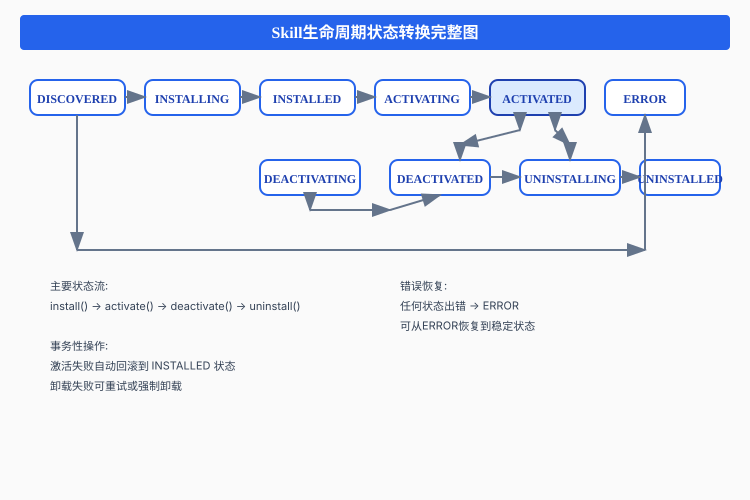
图24：Skill生命周期状态转换完整图
附录D：API快速参考
D.1 生命周期API
// 安装Skill
POST /api/v1/skills/{skillId}/install
Request: { "config": {...} }
Response: { "installId": "...", "status": "INSTALLING" }
// 激活Skill
POST /api/v1/skills/{skillId}/activate
Request: { "role": "assistant" }
Response: { "activationId": "...", "status": "ACTIVATING" }
// 停用Skill
POST /api/v1/skills/{skillId}/deactivate
Response: { "status": "DEACTIVATED" }
// 卸载Skill
DELETE /api/v1/skills/{skillId}
Response: { "status": "UNINSTALLED" }D.2 能力调用API
// 调用能力
POST /api/v1/capabilities/invoke
Request: {
"address": "cap://skill/capability",
"params": {...}
}
Response: {
"success": true,
"result": {...}
}
// 查询能力
GET /api/v1/capabilities?skillId=xxx&type=EXPOSED
Response: {
"capabilities": [...]
}D.3 监控API
// 健康检查
GET /api/v1/health/{capabilityId}
Response: {
"status": "HEALTHY",
"lastCheck": "2024-03-22T10:00:00Z"
}
// 性能指标
GET /api/v1/metrics/{capabilityId}
Response: {
"callCount": 1234,
"successRate": 0.99,
"avgLatencyMs": 45
}总结
软件技能化是软件行业发展的必然趋势。从用友本体论到钉钉悟空，从小龙虾到ooderAgent，行业正在探索如何让软件能力更加智能、更加易用。
ooderAgent通过全生命周期能力管理，为构建新一代AI原生应用提供了坚实的基础：
- 能力驱动架构：从功能到能力的思维转变，实现了真正的解耦和可扩展
- CAP统一寻址：解决了分布式系统中能力寻址的核心问题
- 全生命周期管理：每个能力独立管理，状态可观测、可恢复
- 声明式开发：开发者只需声明"要什么"，系统自动完成"怎么做"
- LLM Agent友好：完整的上下文管理体系，让Agent开发更简单
这套架构已经在ooderAgent MVP版本中得到验证，为企业级AI应用开发提供了可靠的技术底座。